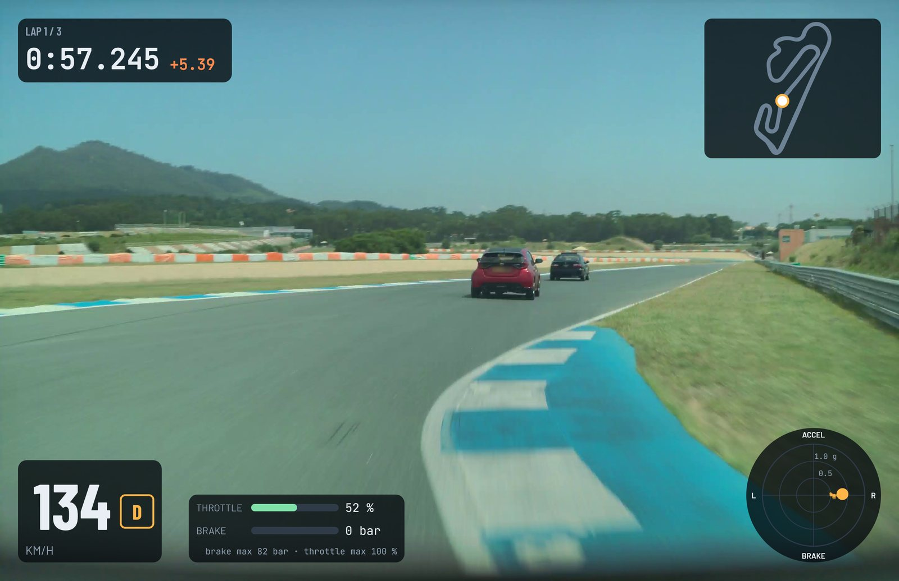
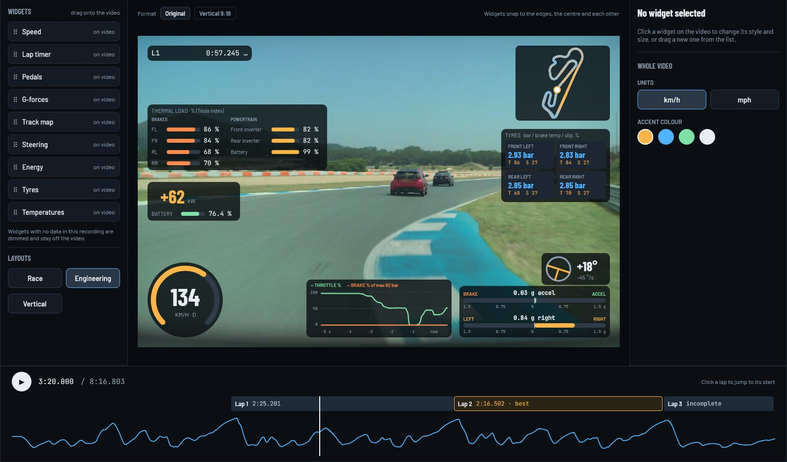

Open your session
Point the app at your recordings. Tesla Track Mode videos and telemetry from the USB drive are paired and synced for you.
Track Studio puts your car's data on top of your track-day footage: speed, lap times, G-forces, pedals and the track map. Tesla Track Mode recordings are imported and synced automatically.
Free version included · Runs on your computer · No account
The Mac version is in development. The download is for PC.

Point the app at your recordings. Tesla Track Mode videos and telemetry from the USB drive are paired and synced for you.
Race, Engineering or Vertical 9:16. Move, resize or hide any panel, then play the lap back with the data on screen.
Export a finished video for YouTube, Shorts or Reels, one lap or the whole session.
Coming in a free update
Panels for data a session doesn't have stay hidden. Sessions without lap timing still work.
No subscription. Taxes are added at checkout where they apply.
Got a discount code? Enter it at checkout. Your licence key arrives by email right after payment.
Video and data are processed locally. There's no account to create and no car login to share. Nothing is uploaded unless you post the finished video yourself.
Tesla Track Mode recordings are imported and synced automatically today. Support for more data sources is on the way.
No. You pay once and the licence never expires.
Two. To move the licence to another computer, deactivate it in Help › License first.
Only to activate the licence and to check it now and then. It keeps working offline for up to 30 days.
It is being built now and ships as a free update for every licence. The app updates itself.
It still works: you get the video with speed, G-forces, pedals and the map.
They are in development.
Yes, within 14 days of purchase. See the refund policy.